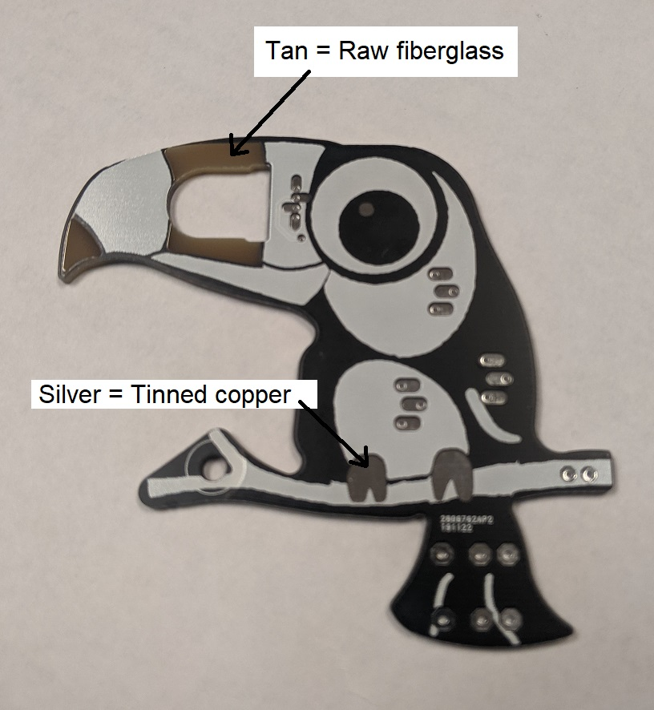

PCB Layout
This week you are going to create an outline and layout for the LED flower, re-imagined in your own way. Let's start this project by creating a EAGLE CAD project and populate it with our schematic. To do this, make sure you have a EENG 393 directory and inside this a lab03 directory.- Launch EAGLE CAD
- In the Control Panel window, select Options -> Directories …,
- In the Directories pop-up add your complete EENG 393 directory as the only entry in the "Projects" row,
- Click "OK",
- In the Control Panel, Find "▶ Projects" and click on the right arrow,
- You should see your EENG 393 directory, navigate into your lab03 folder,
- Right click on the lab03 folder icon just to the right of the ▼ and select "New Project"
- An orange "E" will appear inside the lab03 folder, rename the project ledFlower,
- On this web page, right mouse click on the LED flower link and select "Save Link As …",
- In the "Save As" pop-up, navigate into your ledFlower directory that is inside your lab03 folder,
- Select "Save". You may see a download icon in your browser. You can ignore it,
- In the EAGLE CAD Control Panel, click on the ▼ next to the "ledFlower" project. Then click on the ▶. Repeat until the flower.sch file appears inside the ledFlower folder,
- Double click on the flower.sch file,
- You should see the LED flower schematic,
- In the Control Panel, right mouse click on the "ledFlower" project and select "Close Project",
- Now anytime you open or close the ledFlower project, your schematic will open,
- Open the ledFlower project.
Create layout from schematic
Now let's turn our attention to creating a layout from the schematic that you added to your lab03 project.- Click on the Generate/switch icon found at the top of the
schematic and shown in the image below,

- In the Warning pop-up, click Yes to generate the layout from the schematic,
- You will be presented with the initial layout shown below.

Warning!
You are now concurrently editing two files at once; the schematic and the layout. Keeping these two file consistent means that you need to close them properly by using the close project function from the EAGLE control panel. You should always keep both schematic and layout open at the same time, even if you are editing only one. If you accidentally close one of the schematic or layout, you will get a warning at the top of the remaining window that is open.
This is a bad place to be in. You probably should close without saving at this point. However, any inconsistency between the schematic and layout will risk corrupting your entire project. Always use the EAGLE project manager to close and open your project.
Grid Tool
For this week's assignment, you will want to create an interesting PCB outline. The first step in creating an outline is setting the grid - a 2 dimensional lattice of points where objects can be placed. Start by- From the layout window select View -> Grid.
- You should get the Grid pop-up,
- In the display area, click the "On" radio button,
- In the Size:" text box enter 50
- Set the units to "mil"
- Click OK

After setting the grid, you should see a light gray grid of lines inside the layout area. The intersection of these lines are the set of points where you are allowed to place components, or draw lines and wires.
Drawing Tools
Before you start placing components on the PCB, you first need to create the board outline. You will create the board outline using the line, arc and circle drawing tools located on the bottom left toolbar menu. Lets experiment with these by drawing a simple board outline. I will often sketch out ideas using layer 21 tPlace because it allows me to add internal lines that I may want to keep in the silkscreen. The idea for this board outline comes from the following rocket clip art shown at left in the image below. Since details on a PCB outline is pretty limited, I am planning to break the outline of the rocket into a set of arc and lines as shown at right in the image below.
Let's walk through and do this together. I will first draw the outline in layer 21 tPlace to rough-out the idea and then return and actually draw the PCB outline in layer 20, Dimension.
- In the layout, select the circle drawing tool,
- Just below the toolbar at the top of the screen, select 21 tPlace from the Layer drop down,
- Draw a large circle inside the board perimeter,
- Select the Information tool (Lab 02) and click on the edge of the circle,
- In the Properties pop-up set:
- Position: 2000, 1500
- Width: 6
- Radius: 1200

- Select the Copy Tool (left toolbar icon that looks like a two pieces of dog-eared paper),
- Click on the left edge of the circle you just drew and move the copy to the right and right mouse click,
- Click on the Information tool, then on the edge of the circle you just copied,
- In the Properties pop-up set:
- Position: 3000, 1500
- Width: 6
- Radius: 1200

- Select the Line tool (left toolbar, near the circle tool),
- Just below the toolbar at the top of the screen, select 21 tPlace from the Layer drop down,
- Just to the right of the Layer tool you just used, change the wire bend style to "Wire bend style 2",
- Left click at the start of the fins (left side of the rocket as shown in the image below),
- Move the mouse to the second point on the rocket fin and right mouse click to set that point,
- Continue clicking to complete the fins and bottom of the rocket,
- Hit the "Esc" key to stop entering points on the line,
- You can use the Move tool or Information tool to change the location
of the lines to exactly match what I've drawn,
- 1800, 1500
- 1450, 1250
- 1850, 700
- 2000, 850
- 3000, 850
- 3150, 700
- 3500, 1250
- 3200, 1500

- The images shown above are purposefully drawn small. You may want to right mouse click on them and select "Open image in new tab" to see them in the their full scale.
- Select the Arc tool (to the right of the Line tool),
- In the Layer pull-down (near the top of the screen), select layer 20 Dimension and Width 0,
- Make your first left mouse click at the nose of the rocket,
- Move the mouse down and to the left so that the yellow Dimension circle is as close to the white circle as you can make it and then click with the left mouse button to establish the diameter of the circle the arc is based on,
- Now move the mouse along the white circle to establish the right
side of the rocketship body. Right mouse click at 3200, 1500, just
at the top of the right rocketship fin. You now have the right side
of the rocketship body defined.

- Now repeat this process for the left half of the rocketship body. When you do this, you will get the wrong part of the circle. To fix this, click on the ↺ symbol to the right of the width textbox,
- Now select the line tool (make sure it is set layer 20, width 0, and wire bend style 2), and trace out the rocketship fins and bottom of the rocket as one set of edges,
- Hit the "Esc" key to stop entering points on the line,
- If you did this correctly, you should see a light grey area inside
your rocketship,

- Let's make the top copper pour for Vcc by making a copy of the outline
you just drew and moving it to the top layer. Do this as follows:
- Select the Layer tool, click Hide Layers, then click to the left of the Layer 20 - Dimension row so that the eye icon is displayed. You should now see just the rocketship outline, the rectangular outline and a circle (which is part of the mounting hole),
- Delete the rectangular outline that was provided for us when we converted the schematic to a layout. Do this by selecting the Delete tool and then clicking on each of the four lines. As you do this the interior of the rocketship will turn black with the grid line,
- Select the Group tool,
- Select the entire rocketship outline,
- Select the Copy tool,
- While pressing the Ctrl key, right mouse click on the rocketship outline,
- Move the copy of the rocketship outline to the right so that the two rocketship outlines do not overlap,
- Select the Information tool,
- Right mouse click on the outline of the copied rocketship outline. Select Convert To Polygon → Replace. The copied rocketship should now be filled,
- Right mouse click on the outline of the copied rocketship and select Properties,
- In the Properties pop-up, change the Layer to 1 Top,
- Click Apply. The copied rocketship will disappear because you do not have Layer 1 visible,
- In the Properties pop-up, change the Signal Name to VCC,
- In the Properties pop-up, change the Width to 6,
- Click OK and click Yes to the Warning pop-up,
- Select the Layer tool and make Layer 1 visible by clicking
to the left of the Layer 1 Top row. You should see something
similar to the following.

- Let's make the bottom copper pour for GND by making a copy of the
copied rocketship. Do this as follows:
- Select the Group tool,
- Select the copied rocketship outline,
- Select the copy tool,
- While holding the Ctrl key, right mouse click on the copied rocketship outline,
- Move the copied rocketship to the right so that it does not overlap,
- Left mouse click to place the newest copy,
- Select the Information tool,
- Right mouse click on the outline of the copied rocketship outline. Select Convert To Polygon → Replace. The copied rocketship should now be filled,
- Right mouse click on the outline of the newest copy and select properties,
- In the properties pop-up, change Layer to 16 Bottom,
- Click Apply. The copied rocketship will disappear because you do not have Layer 16 visible,
- In the Properties pop-up, change the Signal Name to GND,
- In the Properties pop-up, change the Width to 6,
- Click OK and click Yes to the Warning pop-up,
- Select the Layer tool and make Layer 16 visible by clicking
to the left of the Layer 16 Bottom row. You should see something

- Select the Group tool,
- Select the entire layer 16 outline of the rocketship,
- Select the Move tool,
- While pressing Ctrl, right mouse click on some corner of the blue, layer 16, copy of the rocketship outline,
- Move the blue outline (layer 16) on top the the yellow outline (layer 20) so the two perfectly align,
- Select the Group tool,
- Select the entire layer 1 outline of the rocketship,
- Select the Move tool,
- While pressing Ctrl, right mouse click on some corner of the red, layer 1, copy of the rocketship outline,
- Move the red outline (layer 1) on top the the yellow outline (layer 20) so the two perfectly align,
- Select the Layer tool,
- In the Visible Layers pop-up, click Show Layers, then Ok,
- You should now have something that looks like the following:

- Select the Layer tool,(layer icon in top of left toolbar),
- In the Visible Layers pop-up click "Hide Layers",
- Click to the left of layer 21 tPlace to make it visible,
- Click OK to remove the Visible Layer pop-up,
- Select the Delete tool and delete all the shapes in layer 21,
- Select the Layer tool,
- Click "Show Layers",
- Click OK.
- Select the Delete tool,
- Click on the white layer 21 line (one of the fins),
- Right mouse click to select an alternative object at the location you just click
- Continue right mouse clicking to cycle between all the objects at the location,
- When the object you want to delete is highlighted, left mouse click to delete the highlighted object.
Component placement
After making the board outline, its time to make an initial placement of the components. What you are going to do in this step is similar to what my father called "shaking out the steel". My father was a steel worker, assembling steel beams into the skeleton of a building. When the steel beams arrive on site, the first task was remove the beams from the trailer using a crane and lay them out on the ground - a process called "shaking out". A good foreman would place the beams in a way that the subsequent steel erection process went as smoothly as possible. Instead of steel beams, you need to shake out the electronic parts so that when you layout the traces of the PCB, they run in an orderly manner.
One way to do this is to observe the logical layout of the parts in your schematic and duplicate it in your layout. This heuristic is based on the notion that parts which are logically related, generally need to be physical proximal. In our LED flower, each potentiometer has an associated resistor, so these pairs should be placed near one another. Since all three potentiometer/resistors combination flow into the LED, it makes sense to place the LED in the middle of the board. - Select the Move tool,
- Click on the part handle for the potentiometer. This is the
thin olive green colored cross in the middle of the POT and
shown in the following image.

- Right click to rotate the potentiometer,
- Left click to place the part,
- Move the parts around to get something similar to the following
image,

- Select the Line tool,
- In the top area, select Layer 21 tPlace and Wire bend style 0,
- Draw a vertical line down the the Layout origin and horizontally
to the right. These lines should be taller than and wider than
the rocketship. Precision is not important right now. You should
have something that looks like the following image:

- Select the Group tool,
- Drag a rectangle around the entire rocketship outline without touching either of the two lines you just drew,
- Select the Move tool,
- While holding the "Ctrl" key, right mouse click on the left-most corner of the left fin of the rocketship,
- Move the rocketship so that the left rocketship fin touches
the horizontal and vertical line from the Layout origin,

- Complete the bounding box by drawing lines in Layer 21
so that they just touch the nose and right fin of the rocketship.
When complete, you should have something that looks like the
following:

Reveal or refresh the copper pours
Select the Ratsnest tool and you should see something similar to the following image:

When you do this the copper pour defined by the rocketship outlines in the top and bottom layers will be filled in with copper attached to their respective signal. For example, the red area in the layout is a sheet of copper attached electrically to VCC. You can verify this by zooming in on the battery connection.

The battery connection has one terminal attached to VCC and one to GND. Zooming in on the battery connection shows a red cross through the VCC connection and a blue cross through the GND connection. This cross tells you that the copper on that layer is attached to that connection.
This is easier to see if you look at the copper pour without all the other layers getting in the way. To do this
- select the Layer tool,
- In the Visible Layers pop-up,
- click Hide Layers,
- Make Layer 16 Bottom visible by clicking to the left of the 16 Bottom layer row, underneath the eye symbol.
- You should see something like the following. Note the "plus" through the connections that are attached to the bottom copper pour which happen to be GND.
- These connections to GND are setup in the schematic that you started with.

Before moving on to the next steps, make all the layers visible by selecting the Layer tool and select Show Layers in the Visible Layers pop-up.
Hiding copper pours
There will be times when you do not want to see the copper pours. For example, when routing wires. You can make the copper pours invisible by selecting the Ripup tool and clicking on the edge of a copper pour. This may be difficult because, there are three different objects coincident at the border of the rocketship, the outline, the top copper layer and the bottom copper layers. You will have to cycle through the layers using the following procedure:
- Select the Ripup tool,
- Left mouse click on the yellow rocketship outline,
- The red dotted outline for Layer 1 will appear,
- Right mouse click on the red rocketship outline,
- The blue dotted outline for Layer 16 will appear,
- Right mouse click on the blue rocketship outline,
- The yellow outline for Layer 20 will appear,
- Continue to right mouse click will cycle through the three outlines in this order,
- When the layer you want to ripup is highlighted left mouse click.

Routing
There are two steps that need completed on this circuit board. First and most obvious, you need to route the wires. This is a skill that you practice last week and will practice again. The second thing that you may want to do it add some decorative art in layer 21 tPlace. This additional art will help sell the illusion that someone is looking at a rocketship. This will require you to flex your creative muscles.- Print the layout to PDF in landscape format with Scale factor: 4. You an use the instructions in Lab02. Import the PDF as the answer to this question.
Adding color to your PCB
Through the selective removal of layers, you can reveal the tan fiberglass core of the PCB or reveal silver solder of tinned coppper. The toucan PCB shown below uses both of these techniques.
Tan: To expose a tan area, create a polygon of the tan area in the following layers. You may want to use a small grid while doing this so that you can get smooth bends using straight lines.
- 29 = tStop
- 41 = tRestrict
- 29 = tStop
Cut out: To create a custom-shaped hole in the PCB. Create a wire outline of the hole in layer 21 (Dimension). Then copy this wire outline into layer 46 (Milling) with a solid polygon pour.
If you would like to look at the Toucan PCB in Eagle, download the following files and inspect away. Note this team imported severl bitmap files so you will find a lot of imported bit layers above 200. None of these high number layers are used in the actual fabrication of the PCB, they are just used for planning None of these high number layers are used in the actual fabrication of the PCB, they are just used for planning.